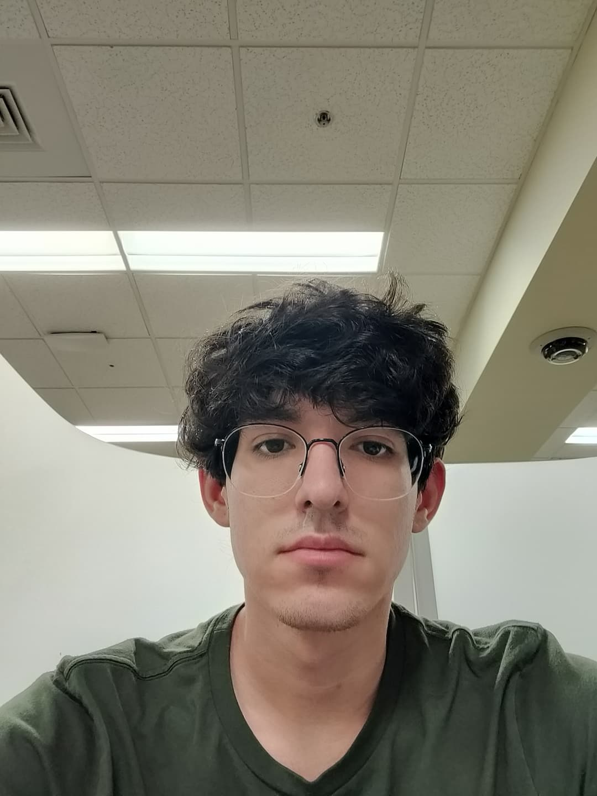

Introduction

Samuel Consuegra | Sneaky Crocodile
Hey, my name is Samuel Consuegra. I’m 20 years old and I’m a junior studying computer science concentrating in Cybersecurity. For fun I like to watch movies and play single player games like RDR2. I’m also really into computers, specifically PC hardware, cars, and occasionally I like to play the guitar.
- Personal Background: I was born and raised in Miami, Florida and I moved to Belmont, NC, when I was 16.
- Professional Background: I’ve worked as a line cook in the summers
- Academic Background: Computer Science, junior year, concentrating in Cybersecurity
- Primary work computer: Asus Laptop, Windows 11, Version 25h2
- Primary Work Location: My home bedroom
- Alternate Computer & Location: For computer, my main desktop I use at home, for location, anywhere on on campus
- Courses I’m taking and why:
- MATH 1242 - Calculus II: for math requirements
- ITSC3146 - Introduction to Operating Systems & Networking: It’s an interesting topic
- ITIS3135 - Front End Web Application Development: very intrigued about the topic and it will be very useful
- ITIS 3200: Introduction to Info Security and Privacy: Very interesting and relevant to my concentration
- ITSC Computing and AI: Ethics, Society and Communication: Very interested in the topic these days